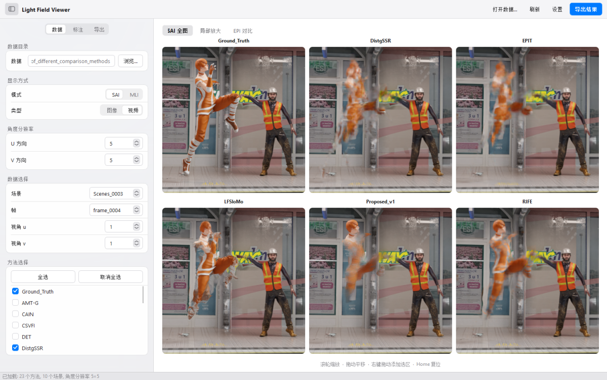

I am a Ph.D. student at Ningbo University (since September 2025), supervised by Prof. Gangyi Jiang and Dr. Yeyao Chen. My research focuses on light field reconstruction and super-resolution under heterogeneous imaging.
For research collaborations, contact me by email or WeChat (ID: 18358481590).
A desktop GUI application for light field image and video analysis, supporting local magnified comparison, EPI (Epipolar Plane Image) extraction, and residual analysis for algorithm evaluation and visualization.

Windows: Download LightFieldViewer.exe from the latest release and double-click to run. No Python installation is required.